Toggle navigation
Home
Tutorials
Hands on oscillations:
Phase-Amplitude Coupling

Coupled-signals simulations: Python
Python Twitter API
Badre ECoG Pipeline Tutorial
Group Analysis Tool Tutorial
Graphiti Tutorial

NodeJS/Bower Setup and Use

Github Setup and Use
NetLogo Tutorial